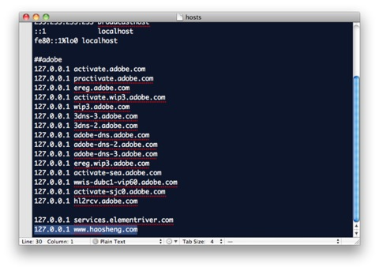
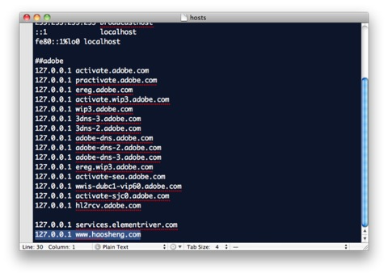

Middlegen配置
19/04/13 19:37 Filed in: java
@+++++++++++++++++++++
@+ Ant配置 +@
@+++++++++++++++++++++
Ant解压到MiddleGen目录，下面假设目录为C:\Middlegen\Ant 更改/修改环境变量 ------------------------------------------------------------------------------------ ANT_HOME C:\Middlegen\Ant PATH %ANT_HOME%\bin; ------------------------------------------------------------------------------------
@+++++++++++++++++++++ @+ MiddleGen配置 +@ @+++++++++++++++++++++
********************************************** ** 解压完成后修改根目录下 build.xml ** **********************************************
(1)首先更改目标数据库配置文件地址 查找关键字 ”!ENTITY”，得到 ------------------------------------------------------------------------------------ ]> ------------------------------------------------------------------------------------ 默认情况下，采用的是hsqldb.xml，将其修改为我们所用的数据库配置文件（mysql.xml）
(2)Application name 查找 ------------------------------------------------------------------------------------
(3)输出目录 查找关键字“name="build.gen-src.dir"”，得到 ------------------------------------------------------------------------------------
(4)对应代码的Package name 查找关键字“destination”，得到 ------------------------------------------------------------------------------------
destination="${build.gen-src.dir}"
package="${name}.hibernate" -->更改为我们需要的包名
genXDocletTags="false" -->设置成true生成以后进行映射提供帮助
genIntergratedCompositeKeys="false"
javaTypeMapper= "middlegen.plugins.hibernate.HibernateJavaTypeMapper"
/>
------------------------------------------------------------------------------------
注意：如果是SQLServer，需要将下面
------------------------------------------------------------------------------------
schema="${database.schema}"
catalog="${database.catalog}"
------------------------------------------------------------------------------------
删除，否则Middlegen会报出找不到表的错误
****************************************************** ** 配置\config\database子目录对应的数据库xml文件，如mysql.xml ** ******************************************************
------------------------------------------------------------------------------------
value="jdbc:mysql://localhost:3306/testDB?
useUnicode=true&characterEncoding=gb2312"/>
=================在MiddleGen 根目录下运行ant，就将出现MiddleGen的界面=================
********************************* ** hbm2java 一般配置 ** ********************************* 修改文件extensions\tools\bin\setenv.bat ------------------------------------------------------------------------------------ @echo off set JDBC_DRIVER=C:\Middlegen\lib\mm.mysql-2.0.4-bin.jar -->JDBC包 set HIBERNATETOOLS_HOME=C:\Middlegen\extensions -->extensions主目录 set HIBERNATE_HOME=C:\Middlegen\hibernate -->hibernate主目录 rem echo HIBERNATETOOLS_HOME set to %HIBERNATETOOLS_HOME%
if "%HIBERNATE_HOME%" == "" goto noHIBERNATEHome
set CORELIB=%HIBERNATE_HOME%\lib set LIB=%HIBERNATETOOLS_HOME%\lib set CP=%CLASSPATH%;%JDBC_DRIVER%;%HIBERNATE_HOME%\hibernate2.jar; %CORELIB%\commons-logging-1.0.4.jar;%CORELIB%\commons-lang-1.0.1.jar; %CORELIB%\cglib-full-2.0.2.jar;%CORELIB%\dom4j-1.4.jar;%CORELIB%\odmg-3.0.jar; %CORELIB%\xml-apis.jar;%CORELIB%\xerces-2.4.0.jar;%CORELIB%\xalan-2.4.0.jar; %CORELIB%\jdom.jar;%CORELIB%\commons-collections-2.1.1.jar; %CORELIB%\hibernate-tools.jar -->重点说明：保证根据上面的设置能找到这些包
if not "%HIBERNATE_HOME%" == "" goto end
:noHIBERNATEHome echo HIBERNATE_HOME is not set. Please set HIBERNATE_HOME. goto end
:end ------------------------------------------------------------------------------------ 在目录下执行C:\Middlegen\extensions\tools\bin>hbm2java c:\middlegen\workshop\test\*.xml --output=c:\middlegen\workshop即可
Ant解压到MiddleGen目录，下面假设目录为C:\Middlegen\Ant 更改/修改环境变量 ------------------------------------------------------------------------------------ ANT_HOME C:\Middlegen\Ant PATH %ANT_HOME%\bin; ------------------------------------------------------------------------------------
@+++++++++++++++++++++ @+ MiddleGen配置 +@ @+++++++++++++++++++++
********************************************** ** 解压完成后修改根目录下 build.xml ** **********************************************
(1)首先更改目标数据库配置文件地址 查找关键字 ”!ENTITY”，得到 ------------------------------------------------------------------------------------ ]> ------------------------------------------------------------------------------------ 默认情况下，采用的是hsqldb.xml，将其修改为我们所用的数据库配置文件（mysql.xml）
(2)Application name 查找 ------------------------------------------------------------------------------------
(3)输出目录 查找关键字“name="build.gen-src.dir"”，得到 ------------------------------------------------------------------------------------
(4)对应代码的Package name 查找关键字“destination”，得到 ------------------------------------------------------------------------------------
注意：如果是SQLServer，需要将
****************************************************** ** 配置\config\database子目录对应的数据库xml文件，如mysql.xml ** ******************************************************
------------------------------------------------------------------------------------
=================在MiddleGen 根目录下运行ant，就将出现MiddleGen的界面=================
********************************* ** hbm2java 一般配置 ** ********************************* 修改文件extensions\tools\bin\setenv.bat ------------------------------------------------------------------------------------ @echo off set JDBC_DRIVER=C:\Middlegen\lib\mm.mysql-2.0.4-bin.jar -->JDBC包 set HIBERNATETOOLS_HOME=C:\Middlegen\extensions -->extensions主目录 set HIBERNATE_HOME=C:\Middlegen\hibernate -->hibernate主目录 rem echo HIBERNATETOOLS_HOME set to %HIBERNATETOOLS_HOME%
if "%HIBERNATE_HOME%" == "" goto noHIBERNATEHome
set CORELIB=%HIBERNATE_HOME%\lib set LIB=%HIBERNATETOOLS_HOME%\lib set CP=%CLASSPATH%;%JDBC_DRIVER%;%HIBERNATE_HOME%\hibernate2.jar; %CORELIB%\commons-logging-1.0.4.jar;%CORELIB%\commons-lang-1.0.1.jar; %CORELIB%\cglib-full-2.0.2.jar;%CORELIB%\dom4j-1.4.jar;%CORELIB%\odmg-3.0.jar; %CORELIB%\xml-apis.jar;%CORELIB%\xerces-2.4.0.jar;%CORELIB%\xalan-2.4.0.jar; %CORELIB%\jdom.jar;%CORELIB%\commons-collections-2.1.1.jar; %CORELIB%\hibernate-tools.jar -->重点说明：保证根据上面的设置能找到这些包
if not "%HIBERNATE_HOME%" == "" goto end
:noHIBERNATEHome echo HIBERNATE_HOME is not set. Please set HIBERNATE_HOME. goto end
:end ------------------------------------------------------------------------------------ 在目录下执行C:\Middlegen\extensions\tools\bin>hbm2java c:\middlegen\workshop\test\*.xml --output=c:\middlegen\workshop即可
mac下Apache配置
19/04/13 19:35 Filed in: mac
mac的apache配置
2011-08-12 23:54:20| 分类： mac
|字号
订阅
最近把开发的项目转移到mac平台上面，自自然然就要配置apache和tomcat的啦，今天倒腾了一下，搭建好了apache的配置~
其实跟windows的apache差不多，只不过我用的是mac osx10.6.7，自带了apache，问了一下群友，设置了root账户的密码，之前我的root账号是空密码，导致用终端时怎么输入都输入不到，anyway，简单记录一下apache的配置
在finder下按cmd+shift+g，有点像windows下的运行，方便打开某个系统目录
输入/private/etc进入etc目录下
如图，用textmate打开apache2下的httpd.conf，把下面这一行前面的#去掉，开启virtual hosts模块
Include /private/etc/apache2/extra/httpd-vhosts.conf
后面就简单了，像以往一样添加虚拟服务器的root路径，访问权，域名指向等~
都在/apache2/extra下面：
添加虚拟服务器：
http-vhosts.conf添加下面配置
DocumentRoot "/Users/linsylar/work/flash builder project/company"
ServerName
开启目录访问权：
http-userdir.conf添加下面配置
Options Indexes FollowSymLinks
AllowOverride None
Order allow,deny
Allow from all
好了，基本上就这么简单，现在要在host上添加我虚拟服务器的域名了~设置host
mac的host文件也在/private/etc/目录下面

设置就大公告成了~
现在在终端把apache启动，或者重启就行了
终端输入：
sudo apachectl start 启动apache
sudo apachectl restart 重启apache
2011-08-12 23:54:20| 分类： mac
|字号
订阅
最近把开发的项目转移到mac平台上面，自自然然就要配置apache和tomcat的啦，今天倒腾了一下，搭建好了apache的配置~
其实跟windows的apache差不多，只不过我用的是mac osx10.6.7，自带了apache，问了一下群友，设置了root账户的密码，之前我的root账号是空密码，导致用终端时怎么输入都输入不到，anyway，简单记录一下apache的配置
在finder下按cmd+shift+g，有点像windows下的运行，方便打开某个系统目录
输入/private/etc进入etc目录下
如图，用textmate打开apache2下的httpd.conf，把下面这一行前面的#去掉，开启virtual hosts模块
Include /private/etc/apache2/extra/httpd-vhosts.conf
后面就简单了，像以往一样添加虚拟服务器的root路径，访问权，域名指向等~
都在/apache2/extra下面：
添加虚拟服务器：
http-vhosts.conf添加下面配置
DocumentRoot "/Users/linsylar/work/flash builder project/company"
ServerName
开启目录访问权：
http-userdir.conf添加下面配置
Options Indexes FollowSymLinks
AllowOverride None
Order allow,deny
Allow from all
好了，基本上就这么简单，现在要在host上添加我虚拟服务器的域名了~设置host
mac的host文件也在/private/etc/目录下面

设置就大公告成了~
现在在终端把apache启动，或者重启就行了
终端输入：
sudo apachectl start 启动apache
sudo apachectl restart 重启apache